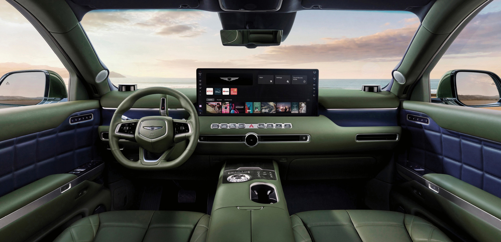

for DC Advanced UX Team.Vivi · Yohan · Libby · Lim Jisu · Katey · Anna
Back Issue

Cockpit
GV90 Neolun: shut the door, no button
The production GV90 Neolun, the coach-door flagship, opened for orders in Korea on 10 November. Close the door and the column shifter, the Crystal Sphere and the tweeter covers move. Brake, select a gear, and it pulls away. There is no start button. The centre OLED is 23.6 inches wide while driving, with telemetry, navigation and infotainment on one layout. Parked, one button opens it to 24.6 inches, about 1.7 times the area. A 25-inch head-up display, Pleos Connect and Gleo AI sit with it.
양산형 GV90 네오룬은 코치 도어 플래그십이고, 한국 주문이 11월 10일에 열렸다. 문을 닫으면 컬럼 시프터와 크리스탈 스피어, 트위터 커버가 움직인다. 브레이크를 밟고 기어를 넣으면 출발한다. 시동 버튼은 없다. 주행 중 센터 OLED는 23.6인치이고, 차의 상태와 내비와 인포테인먼트가 한 화면에 있다. 주차 후 버튼 하나에 24.6인치로 열리며, 면적은 약 1.7배다. 25인치 헤드업 디스플레이와 플레오스 커넥트, 글리오 AI가 함께한다.
The film prints Polestar Formula 2030 along the body. Under the screen, the console is a white panel: climate held at 22°C, tile buttons, knurled knobs, one of them gold. The same panel lists Performance, Normal and Autonomous. The curved cluster swaps Calm, Map and Car cards, and a segmented fade sits on the graphics. Steer-by-wire sends the wheel to actuators. Haptic feedback stands in for a mechanical link.
片子在车身上印着Polestar Formula 2030。屏幕下方是一块白面板：空调停在22°C，瓷砖式按键，滚花旋钮，其中一颗是金色。同一块面板列出Performance、Normal和Autonomous。曲面仪表在Calm、Map和Car三张卡片之间换，图形上有一段分段渐隐。线控转向把方向盘交给执行器。机械连接的位置换成触觉反馈。
영상이 차체 옆에 Polestar Formula 2030을 새긴다. 화면 아래 콘솔은 흰 패널이다. 공조는 22°C, 타일 버튼, 널링 노브, 그중 하나는 금색이다. 같은 패널에 Performance, Normal, Autonomous가 있다. 곡면 클러스터는 Calm, Map, Car 카드를 바꾸고, 그래픽 위에 분할 페이드가 있다. 스티어 바이 와이어는 휠을 액추에이터로 보낸다. 기계식 연결 자리에는 햅틱이 선다.
Motion, still in open beta, plays a style in the list and on the canvas before you apply it. A physics spring takes stiffness and damping, plus mass on iOS and web. Android uses stiffness and a damping ratio. Duration comes from those values. The timeline marks where the motion ends, short of the next keyframe or past it. Springs save into a library. A Lottie preview plays the export before download: shaders and angular gradients flatten, video drops out, and glass, noise and shadows keep the first frame.
아직 오픈 베타인 모션은 스타일을 적용하기 전에 목록과 캔버스에서 먼저 재생한다. 물리 스프링은 iOS와 웹에서 강성, 감쇠, 질량을 받는다. 안드로이드는 강성과 감쇠비이고 질량은 없다. 시간은 그 값에서 나온다. 타임라인은 모션이 끝나는 지점을 표시하고, 다음 키프레임보다 이를 수도 넘을 수도 있다. 스프링은 라이브러리에 저장된다. 로티 미리보기는 받기 전에 재생된다. 셰이더와 각도 그라데이션은 납작해지고, 영상은 빠지며, 유리와 그림자는 첫 프레임에 남는다.
BUCK's titles for Netflix's Bass X Machina open inside Bass's head. A hat brim cuts a field of red, a rider crosses a flat blue sky, and a blue eye stares out of a fractured diamond. The wordmark is distressed, and an oversized X cuts straight through it. Red, white and blue only, paced by Janelle Monáe's HONOR KiLLING. Brian Tyree Henry worked the sequence with the studio. Studio Mir animates the six episodes, on Netflix since 3 November.
BUCK为Netflix的Bass X Machina做的片头，开在Bass脑子里。帽檐切开一片红，骑手穿过平坦的蓝天，一只蓝眼睛从碎开的菱形里盯出来。字标做旧，一个过大的X直接切过标题。只有红、白、蓝，节奏跟着Janelle Monáe的HONOR KiLLING。Brian Tyree Henry和工作室一起做了这段。Studio Mir画的六集，11月3日起在Netflix。
벅이 넷플릭스 Bass X Machina 오프닝을 배스의 머릿속에서 연다. 모자챙이 빨간 면을 가르고, 기수는 평평한 파란 하늘을 가로지르며, 파란 눈이 쪼개진 다이아몬드 밖으로 본다. 워드마크는 닳아 있고, 큰 X가 제목을 곧장 가른다. 빨강, 하양, 파랑뿐이고, 자넬 모네의 HONOR KiLLING이 박자를 잡는다. 브라이언 타이리 헨리가 스튜디오와 시퀀스를 맞췄다. 스튜디오 미르가 여섯 편을 그렸고, 11월 3일부터 넷플릭스에 있다.
The rollers on the Q9 steering wheel come first. More mechanical controls follow: climate buttons, then the same treatment on the doors, applied to interiors already in production, including the Q7. Audi of America's Filip Brabec places that correction under two names, Interior Next and Radical Next, the latter with Gernot and Massimo Frascella. Screens have gone as far as this generation will take them. The hand gets a control it can find without looking.
Q9 스티어링 휠의 롤러가 먼저다. 기계식 조작이 뒤따른다. 공조 버튼, 그다음 도어에 같은 처리, 이미 생산 중인 실내에도, Q7을 포함해서. 아우디 아메리카의 필립 브라베츠는 이 수정을 Interior Next와 Radical Next 두 이름 아래 둔다. 후자는 게르노트, 마시모 프라셀라와 함께다. 화면은 이 세대에서 갈 데까지 갔다. 손은 보지 않고도 찾는 조작을 갖는다.
A pale axolotl is the only animal in the tank with feet. The fish are mid-Bridgerton when the people interrupt, and it climbs out to keep the marathon on. Electric Theatre Collective did the VFX for Iconoclast directors Vania and Muggia, through Mother, for Netflix. It is one of three films under Find The Thing You Never Knew You Needed, shot on 35mm: this one widescreen, a vampire story in 4:3, an astronaut in anamorphic. The sets were built. The gills, and the legs, are the joke.
창백한 아홀로틀은 수조에서 발이 있는 유일한 동물이다. 물고기가 브리저튼을 보던 중 사람이 끊자, 그것이 기어 나와 이어 간다. 일렉트릭 씨어터 컬렉티브가 이코노클라스트의 바니아와 무자를 위해 시각효과를 했고, 마더를 거쳐 넷플릭스 작업이다. 세 편 중 하나, 35mm. 이 편은 와이드, 뱀파이어는 4:3, 우주비행사는 애너모픽. 세트는 지어졌다. 아가미와 다리가 농담이다.
A day after the agent news, Adobe's Max sneaks are the experiments. Project Screen Test starts with traits such as anxious, shy, awkward. You talk to the character as if on a call, and the persona comes back as sliders you can still move. Project Sight Span turns a photo, painting or illustration into a room you can walk. It stays soft until you lock a camera, and that frame comes back sharp. Project Rinse Repeat copies one Photoshop edit onto the other faces or products and rebuilds it with native layers.
하루 전 에이전트 도구와 별개로, 어도비 맥스 스니크는 실험이다. 스크린 테스트는 불안, 수줍음, 어색함 같은 특성에서 시작한다. 통화하듯 말하면 페르소나가 아직 움직일 수 있는 슬라이더로 돌아온다. 사이트 스팬은 사진이나 그림을 걸어 들어갈 방으로 바꾼다. 걸어 다닐 때는 흐리고, 카메라를 고정하면 그 프레임이 선명해진다. 린스 리핏은 포토샵 수정 하나를 다른 얼굴이나 제품에 복사하고 네이티브 레이어로 다시 만든다.
DesignStudio and Lift Type cut DNEG Script, a heavy condensed face for the loud lines. A Vision film sends a lens-like eye down streaks of orange and violet that bend to a vanishing point and resolve into finished shots. The same streaks sit behind coral type: BEYOND POSSIBLE, and under it, Where reality ends, we begin. A wide grotesque handles the quieter lines. The logo is tightened, not redrawn. Black does the rest, so the colour reads as light.
DesignStudio和Lift Type切了DNEG Script，给大声的句子用的重粗窄体。Vision片子让一只镜头般的眼睛沿橙、紫光带走向消失点，再落成完成的镜头。同一道光带垫在珊瑚色大字后面：BEYOND POSSIBLE，下面一行Where reality ends, we begin。宽体怪诞体负责轻的句子。标志是收紧，不是重画。其余交给黑，颜色就读成光。
디자인스튜디오와 리프트 타입이 DNEG Script를 잘랐다. 큰 문장을 위한 무거운 좁은 글자다. 비전 필름은 렌즈 같은 눈을 주황과 보라 줄기를 따라 소실점으로 보내고, 완성된 샷으로 모은다. 같은 줄기가 산호색 글자 뒤에 선다. BEYOND POSSIBLE, 그 아래 Where reality ends, we begin. 넓은 그로테스크가 작은 문장을 맡는다. 로고는 다시 그린 것이 아니라 조였다. 나머지는 검정이라 색은 빛으로 읽힌다.
Koto ends the wordmark's last f in a point and repeats that arrow at prices and offers. Giffsans is a custom tall condensed sans, with a gg ligature that nods at the old mark. Acid green joins the black and white. Photography is flash-lit and candid: a night out, two sunburnt men by the sea, not a stock smile. Green packing tape on the parcel reads Your Next Move. The system sits on Giffgaff's existing design tokens, so the site and the app can ship it.
Koto把字标最后一个f收成尖，并在价格和优惠旁重复这支箭头。Giffsans是定制的高窄无衬线，gg连字接回旧标志。酸性绿加入黑与白。照片是闪光灯下的随手拍：夜出、海边两个晒伤的人，不是素材库的笑。包裹上的绿色胶带写着Your Next Move。系统落在Giffgaff现有的设计令牌上，网站和App可以直接上。
코토는 워드마크의 마지막 f를 화살촉으로 끝내고, 그 화살표를 가격과 혜택 옆에 반복한다. Giffsans는 맞춤 높은 좁은 산세리프이고, gg 합자는 옛 마크를 가리킨다. 애시드 그린이 검정과 하양에 더해진다. 사진은 플래시를 친 즉석 컷이다. 밤거리, 바닷가의 두 사람, 스톡 미소가 아니다. 소포의 녹색 테이프에는 Your Next Move가 찍힌다. 시스템은 기존 디자인 토큰 위에 있어 사이트와 앱이 그대로 실을 수 있다.
J4m1ns' Editable Motion Paths draws a bone or an object's motion as a curve you can edit in the view. Keyframes are points. Tangents are Bezier handles. Knife, bevel, extrude and loop cut work on the path, and the F-curves update underneath, so the Graph Editor can stay closed. A dot per frame shows the spacing. Sculpt brushes cover Grab, Smooth and Pinch, plus Slow, Fast and Even, and Dissolve strips keys from baked curves. Tested on Blender Studio's Rain rig. Blender 4.4 and newer, free on Extensions.
J4m1ns의 Editable Motion Paths는 움직임을 뷰의 곡선으로 그린다. 키는 점, 탄젠트는 베지에 핸들이다. 나이프, 베벨, 익스트루드, 루프 컷이 경로에 먹히고 F커브가 갱신된다. 프레임마다 점이 간격을 보여 준다. 브러시는 그랩, 스무드, 핀치, 슬로, 패스트, 이븐. Dissolve는 구운 키를 걷어 낸다. Rain 리그에서 시험했다. 블렌더 4.4 이상, 익스텐션에서 무료다.
Spy shots from Manali put the next Creta's driver display deep in the dash, up by the demister, rather than in a panel joined to the centre screen the way the new Seltos, Venue and Verna do it. The centre touchscreen is separate and large. The wheel is new: a flat bottom, the four-dot Morse-code H, touch pads, and two physical scroll wheels. A rotary sits under the screen. Boss-mode buttons for the front passenger seat are on the console. Pleos is the likely software. Hyundai has not confirmed it.
마날리의 스파이 샷은 다음 크레타의 운전자 디스플레이를 대시 깊숙이, 디미스터 쪽에 둔다. 새 셀토스, 베뉴, 베르나처럼 센터 화면과 한 패널로 붙이지 않는다. 센터 터치스크린은 따로, 크다. 휠은 새것이다. 평평한 아래, 네 점의 모스 부호 H, 터치 패드, 그리고 물리적 스크롤 휠 두 개. 화면 아래에는 로터리가 있다. 조수석 보스 모드 버튼은 콘솔에 있다. 소프트웨어는 플레오스로 보이지만, 현대는 확인하지 않았다.
Essential Viewing's mark for Ironman's women's community is three chevrons, one each for swim, bike and run, stacked until they read as a W. The line under it is Strength in every thread. The name replaces Women For Tri, which started in 2014. A film called Not One Thing, written and directed by the studio, leads a year of rollout across 45 territories, on Strava, at events and on merch. The mark was at the world championship in Kailua-Kona. The braid is the whole system.
Essential Viewing给Ironman女性社群的标志，是三枚人字形，游泳、骑行、跑步各一枚，叠到读成一个W。下面一行是Strength in every thread。名字换掉2014年的Women For Tri。工作室自编自导的片子Not One Thing，带着一年的铺开，覆盖45个地区、Strava、赛事和周边。标志在凯卢阿-科纳的世锦赛上出现过。辫子就是整套系统。
에센셜 뷰잉이 아이언맨 여성 커뮤니티에 만든 마크는 셰브론 세 개다. 수영, 자전거, 달리기, 하나씩 쌓아 W로 읽히게 한다. 아래 줄은 Strength in every thread. 이름은 2014년의 Women For Tri를 대체한다. 스튜디오가 쓰고 연출한 Not One Thing이 1년 롤아웃을 이끈다. 45개 지역, 스트라바, 대회, 상품. 마크는 카일루아코나의 세계선수권에 있었다. 땋임이 시스템 전체다.
The steel body is the same Vespa. On the 2027 Primavera Tech Elettrica the new face is a 5-inch TFT, with keyless start, turn-by-turn navigation through the phone link, and a seat that unlocks from the app. The Tech is homologated as a motorcycle in Europe and runs to 67 km/h. A battery that lifts out, so it can charge indoors, is the other change for riders without a garage. The 45 km/h Primavera and Sprint S share the new Italian motor, which drops rare-earth magnets. From across the floor you still see a Vespa.
강철 차체는 그대로인 베스파다. 2027 프리마베라 테크 엘레트리카의 새 얼굴은 5인치 TFT다. 키리스 시동, 전화 연결의 턴바이턴 내비, 앱으로 열리는 시트가 있다. 테크는 유럽에서 모터사이클로 인증되고 67km/h까지 간다. 배터리는 빼서 실내에서 충전할 수 있어, 차고가 없는 라이더를 위한 변화다. 45km/h 프리마베라와 스프린트 S는 희토류 자석을 뺀 새 이탈리아 모터를 공유한다. 멀리서 보면 여전히 베스파다.
A patent granted this month has the car's front cameras recognise a drag strip's Christmas tree. The driver stands on both pedals. The car holds the brakes, times the yellow sequence, and releases brake pressure when the green lamp lights. The patent also covers trees that step at different intervals, so the same logic can move between strips. What the driver does with the throttle after the launch is left open. The interface is a camera reading three colours, and a foot that stays down.
이번 달 등록된 특허에서 차의 전방 카메라는 드래그 스트립의 크리스마스 트리를 알아본다. 운전자는 두 페달을 함께 밟는다. 차는 브레이크를 잡고 노란 등의 간격을 재며, 초록 등이 켜지면 제동 압력을 푼다. 특허는 간격이 다른 트리도 커버해, 같은 논리가 서킷을 옮겨 갈 수 있다. 출발 뒤 가속 페달을 어찌할지는 열려 있다. 인터페이스는 세 가지 색을 읽는 카메라이고, 발은 그대로 밟혀 있다.
A small orange four-wheeler, tested with Field AI, puts a screen where a windshield would be. The eyes move. The eyelids blink. The paint is a high-vis vest, orange with yellow, closer to Cars than to a humanoid. A sign on the roof changes to point at an open space, and two short arms carry red lights, the way a marshaller does. Shown at Disney Accelerator Demo Day. No date for the Disneyland lots, and no promise they will be there.
필드 AI와 시험 중인 작은 주황 사륜은 앞유리가 있을 자리에 화면을 둔다. 눈이 움직이고, 눈꺼풀이 깜빡인다. 도색은 안전조끼다. 주황에 노랑, 휴머노이드보다 카스에 가깝다. 지붕의 표지판은 빈자리를 가리키도록 바뀌고, 짧은 팔 두 개가 빨간 등을 든다. 마샬러처럼. 디즈니 액셀러레이터 데모 데이에서 보였다. 디즈니랜드 주차장에 올 날짜도, 온다는 약속도 없다.
Figures in white thobes and ghutras sit on ornate chairs among hydrangeas, and the faces are dissolved, the way a photo looks when you enlarge it past the file. The roses read as stickers, pasted on a flat candy ground, so each person looks cut out and dropped in. Hawazin paints them by hand in a Brixton studio. Silent Hill 2 is the recent reference: a place that feels like a mood you walk through. A sharp face would be a portrait. This one is a screenshot that never resolved.
白袍和头巾里的人坐在绣球花间的雕花椅子上，脸化开了，像一张被放到超过文件分辨率的照片。玫瑰读成贴纸，贴在平坦的糖果色地上，每个人都像剪下来再放下。Hawazin在布里克斯顿的工作室里用手画。最近的参照是Silent Hill 2：一个像心情一样能走进去的地方。脸如果清楚，就是肖像。这张是始终没有对上焦的截图。
흰 토브와 구트라를 한 인물들이 수국 사이 화려한 의자에 앉아 있고, 얼굴은 풀려 있다. 파일을 넘겨 확대한 사진처럼. 장미는 스티커로 읽히고, 평평한 사탕색 바닥에 붙어, 사람마다 오려 붙인 것처럼 보인다. 하와진은 브릭스턴 작업실에서 손으로 그린다. 최근 참조는 사일런트 힐 2다. 기분처럼 걸어 들어가는 장소. 얼굴이 선명하면 초상이다. 이것은 끝내 초점이 맞지 않은 스크린샷이다.
MK-II Studio's Loupe Light, by Andrew Ferrier, stacks magnetic rings into a ribbed shade over a cylindrical base. The clear centre of each ring is a lens, not a hole. Lift one off and it is a magnifier with warm light at the rim, so the menu can be read without a phone on the table. The lens is meant to hover over the paper. Rings can be added for a larger table, and the rest stay lit. Cordless, sealed, charged by induction, so the set can be wiped between seatings. Magnification and runtime are still open.
MK-II 스튜디오의 루프 라이트는 앤드루 페리어의 작업이다. 자석 링을 원통 베이스 위 골진 갓으로 쌓는다. 각 링의 투명한 중심은 구멍이 아니라 렌즈다. 하나를 들어 올리면 가장자리에 따뜻한 빛이 있는 확대경이 되어, 메뉴를 보려 전화를 테이블에 올리지 않아도 된다. 렌즈는 종이 위에 떠 있도록 되어 있다. 큰 테이블에는 링을 더하고, 나머지는 켜진 채다. 무선, 밀폐, 유도 충전이라 자리 사이에 닦을 수 있다. 배율과 사용 시간은 아직 열려 있다.
Google Labs' Tabletop builds a shared board from a prompt: a trip itinerary, a dinner poll, an expense split, a tournament bracket. You drop in links, files and notes, then prompt @tabletop, or start from a template. One invite link puts the group in the same space, editing together the way a Doc does. It looks closer to a planning wall than to a chat. The beta is a US waitlist, 18 and over. The thing on screen is the tool you asked for, not a thread of answers.
Google Labs的Tabletop用一句提示做出共享板：行程、晚餐投票、分账、对阵表。丢进链接、文件和笔记，再对@tabletop说，或从模板开始。一条邀请链接让一群人进同一块板，像文档一样一起改。看起来更像规划墙，而不是聊天。测试是美国候补名单，18岁以上。屏幕上是你要的那个工具，不是一串回答。
구글 랩스의 테이블톱은 프롬프트로 공유 보드를 만든다. 여행 일정, 저녁 투표, 비용 나누기, 대진표. 링크와 파일과 메모를 넣고 @tabletop에 말하거나, 템플릿에서 시작한다. 초대 링크 하나가 무리를 같은 공간에 넣고, 문서처럼 함께 고친다. 채팅보다 계획 벽에 가깝다. 베타는 미국 대기자 명단이고, 18세 이상이다. 화면 위는 요청한 도구이지, 답변의 실이 아니다.